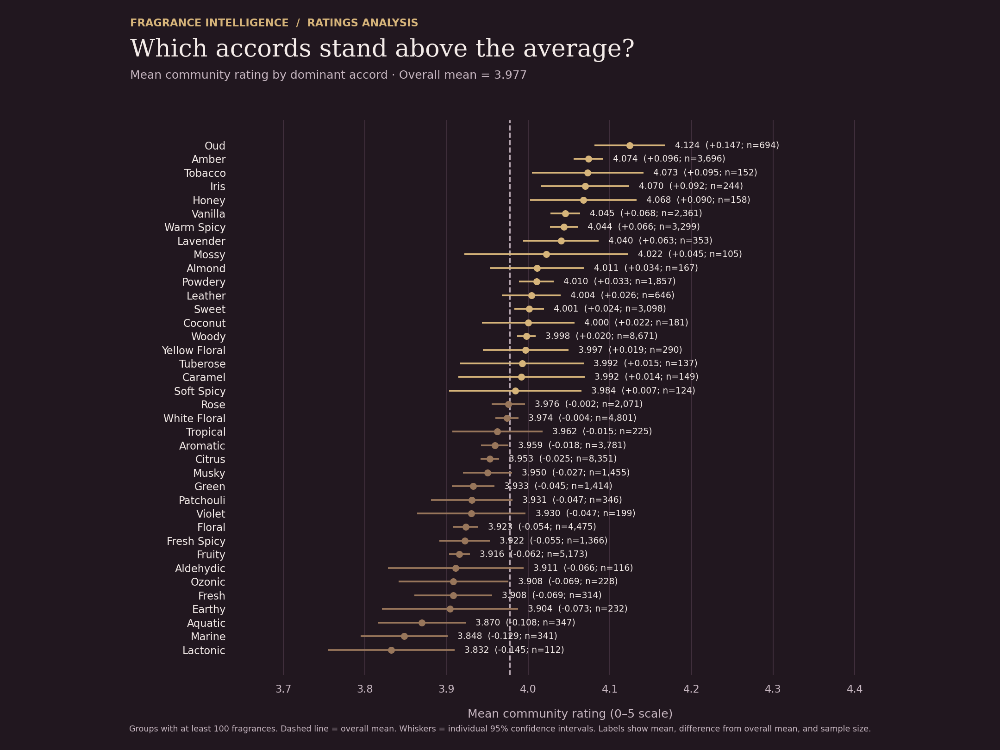
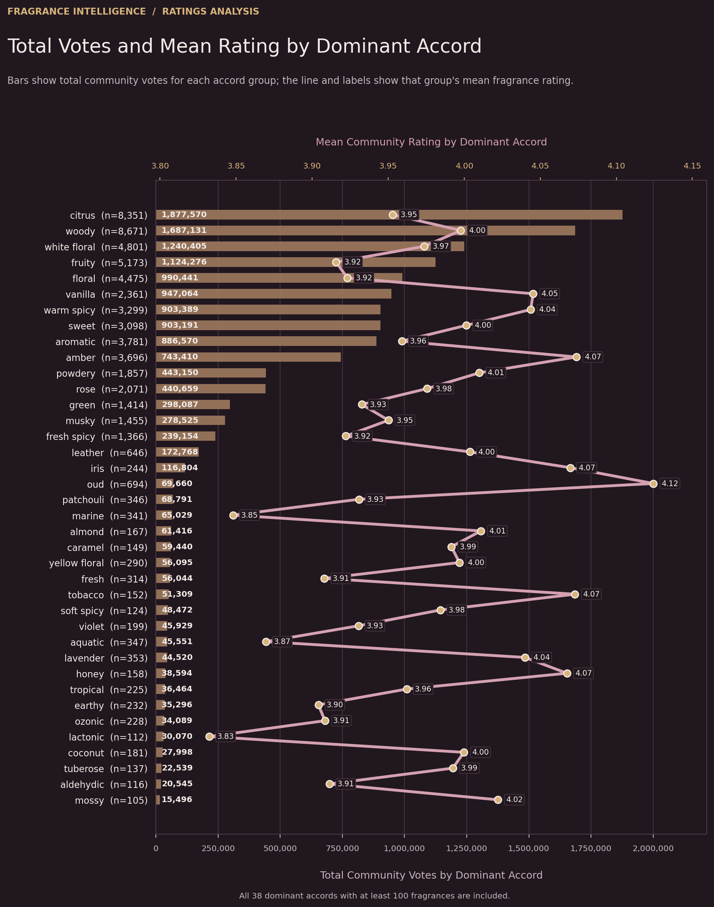
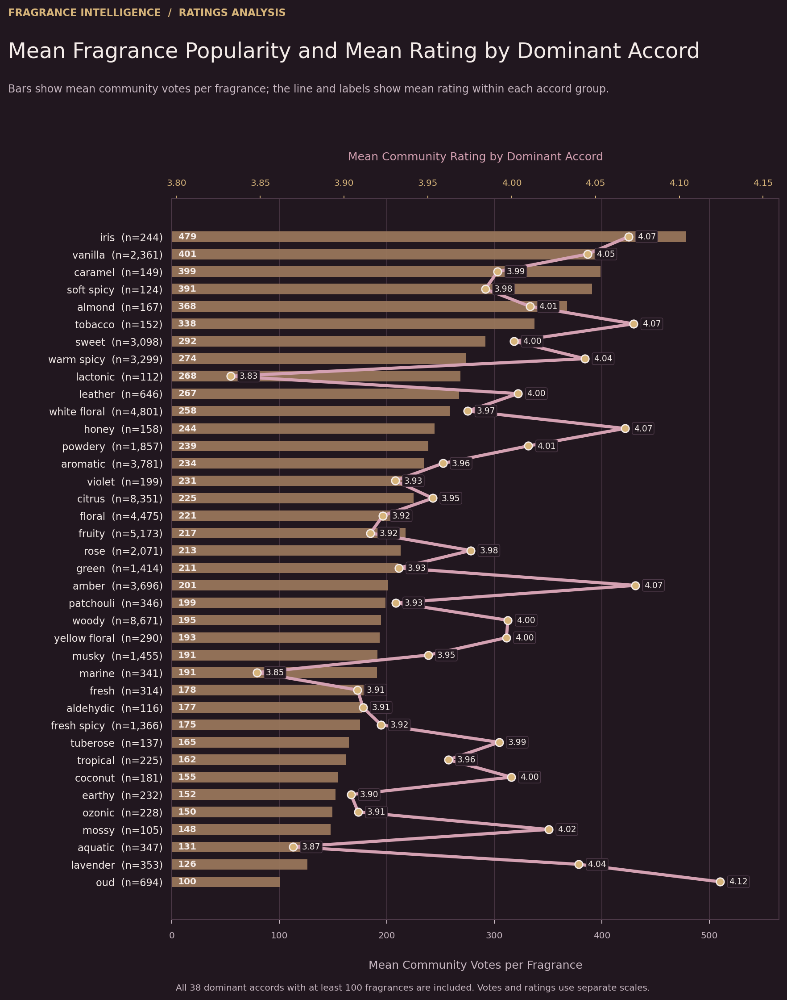
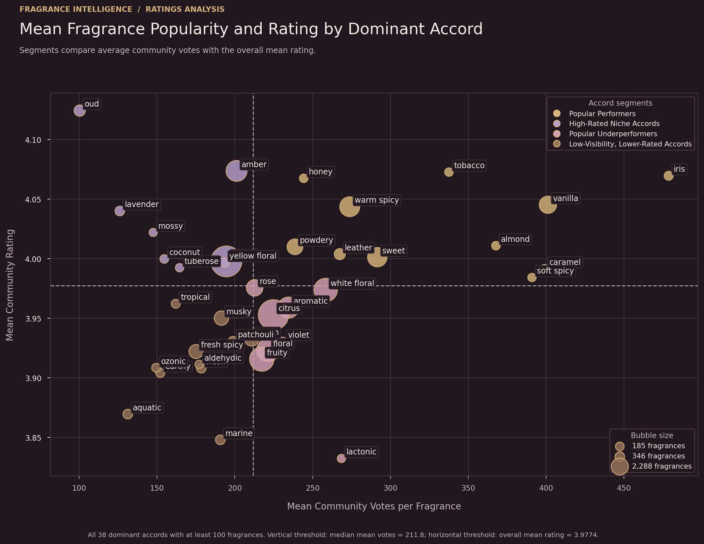

01
Average rating by dominant accord
Mean ratings compared with the overall mean of 3.9774. Oud has the highest mean rating in this analysis, at approximately 4.1244.

FRAGRANCE DATA · COMMUNITY RATINGS · VISUAL ANALYTICS
How do dominant fragrance accords compare in average ratings and community voting activity? This analysis explores three complementary measures and groups 38 dominant accords into four descriptive segments.
THE VISUAL ANALYSIS
The same visualizations published in the article are presented here in analytical order. Select any chart to open the full-size image.
Mean ratings compared with the overall mean of 3.9774. Oud has the highest mean rating in this analysis, at approximately 4.1244.

Aggregate voting activity highlights groups such as citrus and woody, while also reflecting how many fragrances belong to each group.

This measure helps compare voting activity across accord groups with different numbers of fragrances. Iris has the highest average, at approximately 478.70 votes per fragrance.

The bubble visualization combines mean rating and average votes per fragrance to show the relative position of each accord group.

SEGMENTATION
Each group is classified against two reference thresholds: the overall mean rating and the median of the 38 group-level average-vote values.
Above-benchmark mean ratings paired with higher-than-median average voting activity per fragrance.
Rating: ≥ 3.9774 · Mean votes: ≥ 211.79
Above-benchmark mean ratings despite lower-than-median average voting activity per fragrance.
Rating: ≥ 3.9774 · Mean votes: < 211.79
Higher-than-median average voting activity, but mean ratings below the overall benchmark.
Rating: < 3.9774 · Mean votes: ≥ 211.79
Below-benchmark mean ratings combined with lower-than-median average voting activity per fragrance.
Rating: < 3.9774 · Mean votes: < 211.79
The overall mean rating across the eligible fragrance records. Accord groups are compared with this reference value.
The median of the 38 accord-level average-vote values. It is a dataset-specific threshold, not a universal definition of popularity.
These segments are descriptive, not absolute quality labels. Ratings and recorded votes do not measure sales or market share, and this analysis does not establish causal relationships. Total votes are influenced by group size, which is why average votes per fragrance is also examined.
KEY TAKEAWAYS
Several results illustrate why the metrics should be interpreted together rather than used interchangeably.
4.1244
Oud has the highest mean rating, while averaging approximately 100.37 votes per fragrance—below the attention threshold.
478.70
Iris has the highest average votes per fragrance, with a mean rating of approximately 4.0697.